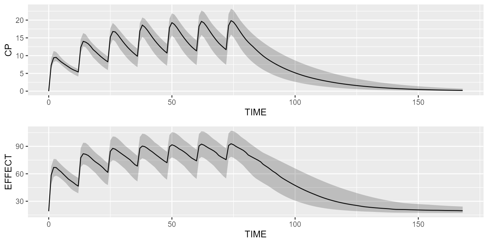
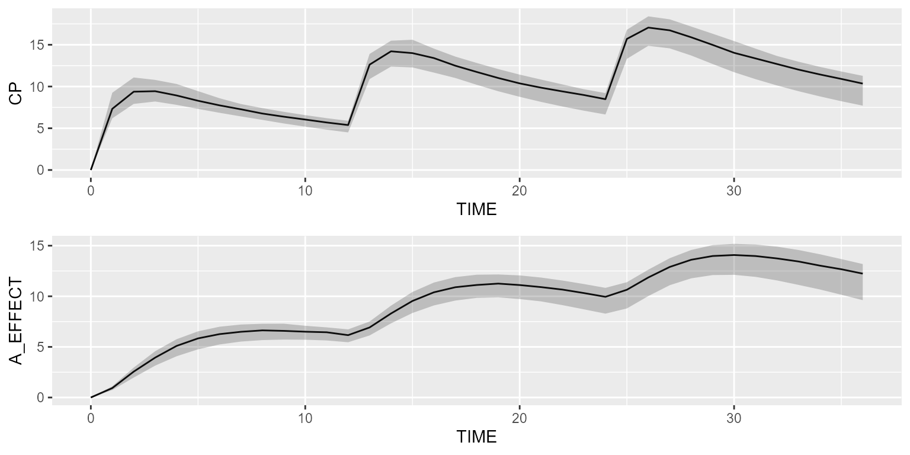
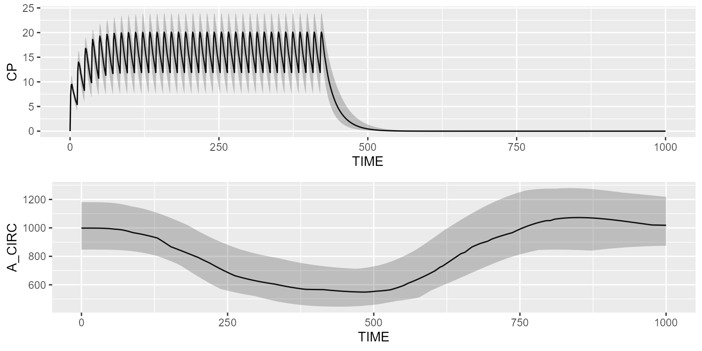
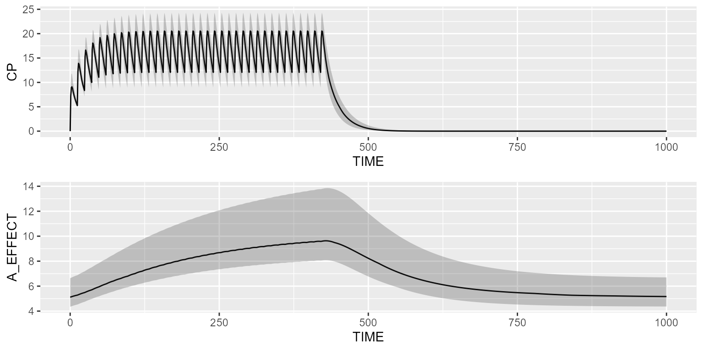

This vignette presents a couple of pharmacodynamic models (PD) from the model library that can be linked to an existing PK model.
In order to not repeat ourselves, all the below pharmacodynamic models will be linked to our reference 2-compartment PK model from the library.
pk <- model_library$advan4_trans4Load the direct-effect model from the model library:
pd <- model_library$direct_effect_model
pd## [MAIN]
## EMAX=THETA_EMAX*exp(ETA_EMAX)
## EC50=THETA_EC50*exp(ETA_EC50)
## GAMMA=THETA_GAMMA*exp(ETA_GAMMA)
## E0=THETA_E0*exp(ETA_E0)
##
## [ODE]
## PK_CONC=10
## EFFECT=E0 + EMAX*pow(PK_CONC, GAMMA)/(pow(EC50, GAMMA) + pow(PK_CONC, GAMMA))
##
##
## THETA's:
## name index value fix
## 1 EMAX 1 100.0 FALSE
## 2 EC50 2 10.0 FALSE
## 3 GAMMA 3 1.5 FALSE
## 4 E0 4 20.0 FALSE
## OMEGA's:
## name index index2 value fix type same
## 1 EMAX 1 1 10 FALSE cv% NA
## 2 EC50 2 2 10 FALSE cv% NA
## 3 GAMMA 3 3 10 FALSE cv% NA
## 4 E0 4 4 10 FALSE cv% NA
## SIGMA's:
## # A tibble: 0 x 0
## No variance-covariance matrix
##
## Compartments:Link the PD model to the PK model as follows:
pkpd <- pk %>% add(pd)
pkpd <- pkpd %>% replace(Equation("PK_CONC", "A_CENTRAL/S2"))Simulate the PK/PD model with a basic dataset:
library(campsis)
dataset <- Dataset(25) %>%
add(Bolus(time=0, amount=1000, compartment=1, ii=12, addl=6)) %>%
add(Observations(times=0:168))
results <- pkpd %>% simulate(dataset=dataset, seed=1)
gridExtra::grid.arrange(shadedPlot(results, "CP"), shadedPlot(results, "EFFECT"), ncol=1)
Load the effect-compartment model from the model library:
pd <- model_library$effect_cmt_model
pd## [MAIN]
## KE0=THETA_KE0*exp(ETA_KE0)
##
## [ODE]
## PK_CONC=10
## d/dt(A_EFFECT)=KE0*(PK_CONC - A_EFFECT)
##
##
## THETA's:
## name index value fix
## 1 KE0 1 0.25 FALSE
## OMEGA's:
## name index index2 value fix type same
## 1 KE0 1 1 15 FALSE cv% NA
## SIGMA's:
## # A tibble: 0 x 0
## No variance-covariance matrix
##
## Compartments:
## A_EFFECT (CMT=1)Link the PD model to the PK model as follows:
pkpd <- pk %>% add(pd)
pkpd <- pkpd %>% replace(Equation("PK_CONC", "A_CENTRAL/S2"))Simulate the PK/PD model with a basic dataset:
library(campsis)
dataset <- Dataset(25) %>%
add(Bolus(time=0, amount=1000, compartment=1, ii=12, addl=2)) %>%
add(Observations(times=0:36))
results <- pkpd %>% simulate(dataset=dataset, seed=1)
gridExtra::grid.arrange(shadedPlot(results, "CP"), shadedPlot(results, "A_EFFECT"), ncol=1)
Load the transit-compartment model from the model library:
pd <- model_library$transit_cmt_model
pd## [MAIN]
## BASE=THETA_BASE*exp(ETA_BASE)
## POWER=THETA_POWER*exp(ETA_POWER)
## MTT=THETA_MTT*exp(ETA_MTT)
## SLOPE=THETA_SLOPE*exp(ETA_SLOPE)
## KTR=4/MTT
##
## [ODE]
## PK_CONC=10
## DRUG=SLOPE*PK_CONC
## d/dt(A_PROL)=KTR*A_PROL*pow(BASE/A_CIRC, POWER)*(1-DRUG)-KTR*A_PROL
## d/dt(A_TRANS1)=KTR*A_PROL - KTR*A_TRANS1
## d/dt(A_TRANS2)=KTR*A_TRANS1 - KTR*A_TRANS2
## d/dt(A_TRANS3)=KTR*A_TRANS2 - KTR*A_TRANS3
## d/dt(A_CIRC)=KTR*A_TRANS3- KTR*A_CIRC
##
## [INIT]
## A_PROL=BASE
## A_TRANS1=BASE
## A_TRANS2=BASE
## A_TRANS3=BASE
## A_CIRC=BASE
##
##
## THETA's:
## name index value fix
## 1 BASE 1 1.0e+03 FALSE
## 2 POWER 2 1.5e-01 FALSE
## 3 MTT 3 1.0e+02 FALSE
## 4 SLOPE 4 5.0e-03 FALSE
## OMEGA's:
## name index index2 value fix type same
## 1 BASE 1 1 10 FALSE cv% NA
## 2 POWER 2 2 10 FALSE cv% NA
## 3 MTT 3 3 10 FALSE cv% NA
## 4 SLOPE 4 4 10 FALSE cv% NA
## SIGMA's:
## # A tibble: 0 x 0
## No variance-covariance matrix
##
## Compartments:
## A_PROL (CMT=1)
## A_TRANS1 (CMT=2)
## A_TRANS2 (CMT=3)
## A_TRANS3 (CMT=4)
## A_CIRC (CMT=5)Link the PD model to the PK model as follows:
pkpd <- pk %>% add(pd)
pkpd <- pkpd %>% replace(Equation("PK_CONC", "A_CENTRAL/S2"))Simulate the PK/PD model with a basic dataset:
library(campsis)
dataset <- Dataset(25) %>%
add(Bolus(time=0, amount=1000, compartment=1, ii=12, addl=35)) %>%
add(Observations(times=0:1000))
results <- pkpd %>% simulate(dataset=dataset, seed=1)
gridExtra::grid.arrange(shadedPlot(results, "CP"), shadedPlot(results, "A_CIRC"), ncol=1)
Load one of the 4 indirect-response model (IRM) present in the model library:
pd <- model_library$irm_kout_inhibition
pd## [MAIN]
## IC50=THETA_IC50*exp(ETA_IC50)
## KIN=THETA_KIN*exp(ETA_KIN)
## KOUT=THETA_KOUT*exp(ETA_KOUT)
##
## [ODE]
## PK_CONC=10
## COEF=1 - PK_CONC/(IC50 + PK_CONC)
## d/dt(A_EFFECT)=KIN - KOUT*COEF*A_EFFECT
##
## [INIT]
## A_EFFECT=KIN/KOUT
##
##
## THETA's:
## name index value fix
## 1 IC50 1 15.00 FALSE
## 2 KIN 2 0.05 FALSE
## 3 KOUT 3 0.01 FALSE
## OMEGA's:
## name index index2 value fix type same
## 1 IC50 1 1 10 FALSE cv% NA
## 2 KIN 2 2 10 FALSE cv% NA
## 3 KOUT 3 3 10 FALSE cv% NA
## SIGMA's:
## # A tibble: 0 x 0
## No variance-covariance matrix
##
## Compartments:
## A_EFFECT (CMT=1)Link the PD model to the PK model as follows:
pkpd <- pk %>% add(pd)
pkpd <- pkpd %>% replace(Equation("PK_CONC", "A_CENTRAL/S2"))Simulate the PK/PD model with a basic dataset:
library(campsis)
dataset <- Dataset(25) %>%
add(Bolus(time=0, amount=1000, compartment=1, ii=12, addl=35)) %>%
add(Observations(times=0:1000))
results <- pkpd %>% simulate(dataset=dataset, seed=1)
gridExtra::grid.arrange(shadedPlot(results, "CP"), shadedPlot(results, "A_EFFECT"), ncol=1)